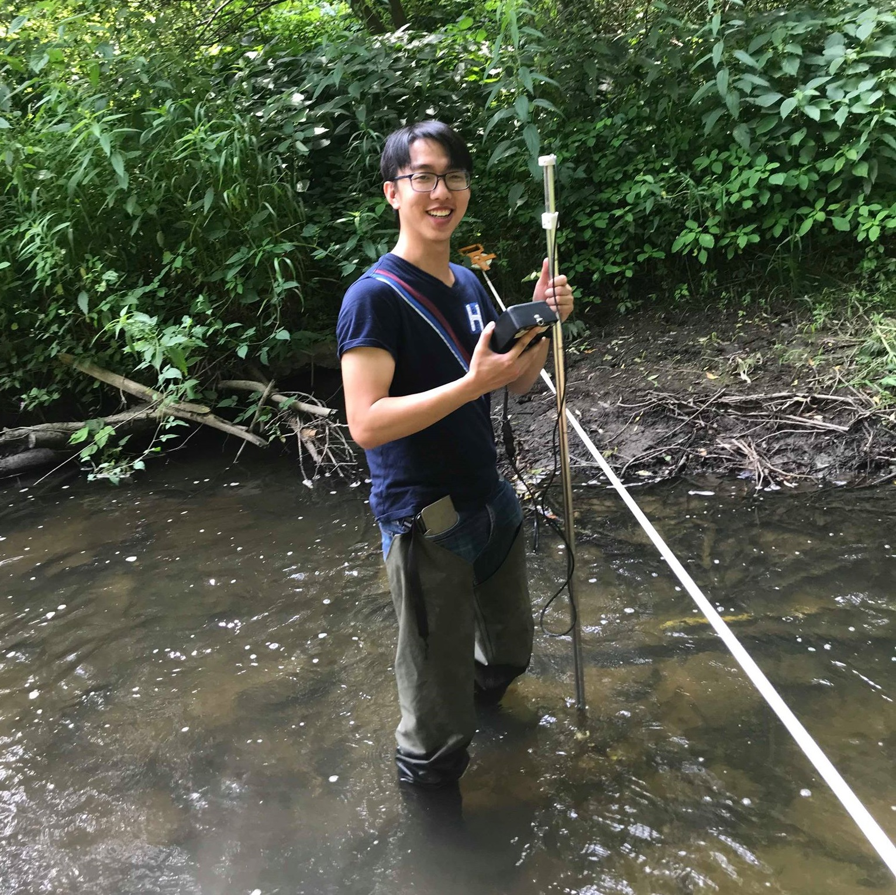

Project Management
Municipal Engineering
Environmental Sampling
Hydraulic Analysis
Construction
Report Writing
Teaching
AutoCAD
HEC-RAS
MS Office
ArcGIS
MATLAB
Town of Innisfil, Sep 2019 - Dec 2019
Capital Engineering
Town of Innisfil, May 2018 - Aug 2018
Development Engineering
University of Waterloo, Sep 2017 - Dec 2017
Civ./Env. Engineering Fundamentals TA
University of Waterloo, Jan 2017 - Apr 2017
Engineering Outreach Activity Developer
 STORMWATER MANAGEMENT
STORMWATER MANAGEMENT SUSTAINABLE DEVELOPMENT
SUSTAINABLE DEVELOPMENT